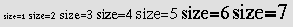
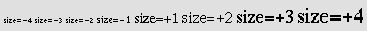

Contents
This section of the specification discusses some HTML elements and attributes that may be used for visual formatting of elements. Many of them are deprecated.
Attribute definitions
This attribute sets the background color of the canvas for the document body (the BODY element) or for tables (the TABLE, TR, TH, and TD elements). Additional attributes for specifying text color can be used with the BODY element.
This attribute has been deprecated in favor of style sheets for specifying background color information.
It is possible to align block elements (tables, images, objects, paragraphs, etc.) on the canvas with the align attribute. Although this attribute may be set for many HTML elements, its range of possible values sometimes differs from element to element. Here we only discuss the meaning of the align attribute for text.
Attribute definitions
The default depends on the base text direction. For left to right text, the default is align=left, while for right to left text, the default is align=right.
DEPRECATED EXAMPLE:
This example centers a heading on the canvas.
<H1 align="center"> How to Carve Wood </H1>
Using CSS, for example, you could achieve the same effect as follows:
<HEAD>
<TITLE>How to Carve Wood</TITLE>
<STYLE type="text/css">
H1 { text-align: center}
</STYLE>
<BODY>
<H1> How to Carve Wood </H1>
Note that this would center all H1 declarations. You could reduce the scope of the style by setting the class attribute on the element:
<HEAD>
<TITLE>How to Carve Wood</TITLE>
<STYLE type="text/css">
H1.wood {text-align: center}
</STYLE>
<BODY>
<H1 class="wood"> How to Carve Wood </H1>
DEPRECATED EXAMPLE:
Similarly, to right align a paragraph on the canvas with HTML's
align attribute you could have:
<P align="right">...Lots of paragraph text...
which, with CSS, would be:
<HEAD>
<TITLE>How to Carve Wood</TITLE>
<STYLE type="text/css">
P.mypar {text-align: right}
</STYLE>
<BODY>
<P class="mypar">...Lots of paragraph text...
DEPRECATED EXAMPLE:
To right align a series of paragraphs, group them with the
DIV element:
<DIV align="right"> <P>...text in first paragraph... <P>...text in second paragraph... <P>...text in third paragraph... </DIV>
With CSS, the text-align property is inherited from the parent element, you can therefore use:
<HEAD>
<TITLE>How to Carve Wood</TITLE>
<STYLE type="text/css">
DIV.mypars {text-align: right}
</STYLE>
<BODY>
<DIV class="mypars">
<P>...text in first paragraph...
<P>...text in second paragraph...
<P>...text in third paragraph...
</DIV>
To center the entire document with CSS:
<HEAD>
<TITLE>How to Carve Wood</TITLE>
<STYLE type="text/css">
BODY {text-align: center}
</STYLE>
<BODY>
...the body is centered...
</BODY>
The CENTER element is exactly equivalent to specifying the DIV element with the align attribute set to "center". The CENTER element is deprecated.
Images and objects may appear directly "in-line" or may be floated to one side of the page, temporarily altering the margins of text that may flow on either side of the object.
The align attribute for object, images, tables, frames, etc., causes the object to float to the left or right margin. Floating objects generally begin a new line. This attribute takes the following values:
DEPRECATED EXAMPLE:
The following example shows how to float an
IMG element to the current
left margin of the canvas.
<IMG align="left" src="http://foo.com/animage.gif" alt="my boat">
Some alignment attributes also permit the "center" value, which does not cause floating, but centers the object within the current margins. However, for P and DIV, the value "center" causes the contents of the element to be centered.
Another attribute, defined for the BR element, controls text flow around floating objects.
Attribute definitions
Consider the following visual scenario, where text flows to the right of an image until a line is broken by a BR:
********* ------- | | ------- | image | --<BR> | | *********
If the clear attribute is set to none, the line following BR will begin immediately below it at the right margin of the image:
********* ------- | | ------- | image | --<BR> | | ------ *********
DEPRECATED EXAMPLE:
If the clear attribute is set to
left or all, next line will appear as
follows:
********* ------- | | ------- | image | --<BR clear="left"> | | ********* -----------------
Using style sheets, you could specify that all line breaks should behave this way for objects (images, tables, etc.) floating against the left margin. With CSS, you could achieve this as follows:
<STYLE type="text/css">
BR { clear: left }
</STYLE>
To specify this behavior for a specific instance of the BR element, you could combine style information and the id attribute:
<HEAD>
...
<STYLE type="text/css">
BR#mybr { clear: left }
</STYLE>
</HEAD>
<BODY>
<P>...
********* -------
| | -------
| table | --<BR id="mybr">
| |
*********
-----------------
...
</BODY>
The following HTML elements specify font information. Although they are not all deprecated, their use is discouraged in favor of style sheets.
<!ENTITY % fontstyle "TT | I | B | BIG | SMALL"> <!ELEMENT (%fontstyle;|%phrase;) - - (%inline;)*> <!ATTLIST (%fontstyle;|%phrase;) %attrs; -- %coreattrs, %i18n, %events -- >
Start tag: required, End tag: required
Attributes defined elsewhere
Rendering of font style elements depends on the user agent. The following is an informative description only.
The following sentence shows several types of text:
<P><b>bold</b>, <i>italic</i>, <b><i>bold italic</i></b>, <tt>teletype text</tt>, and <big>big</big> and <small>small</small> text.
These words might be rendered as follows:
It is possible to achieve a much richer variety of font effects using style sheets. To specify blue, italic text in a paragraph with CSS:
<HEAD>
<STYLE type="text/css">
P.mypar {font-style: italic; color: blue}
</STYLE>
</HEAD>
<P id="mypar">...Lots of blue italic text...
Font style elements must be properly nested. Rendering of nested font style elements depends on the user agent.
FONT and BASEFONT are deprecated.
See the Transitional DTD for the formal definition.
Attribute definitions
Attributes defined elsewhere
The FONT element changes the font size and color for text in its contents.
The BASEFONT element sets the base font size (using the size attribute). Font size changes achieved with FONT are relative to the base font size set by BASEFONT. If BASEFONT is not used, the default base font size is 3.
DEPRECATED EXAMPLE:
The following example will show the difference between the seven
font sizes available with FONT:
<P><font size=1>size=1</font> <font size=2>size=2</font> <font size=3>size=3</font> <font size=4>size=4</font> <font size=5>size=5</font> <font size=6>size=6</font> <font size=7>size=7</font>
This might be rendered as:

The following shows an example of the effect of relative font sizes using a base font size of 3:

The base font size does not apply to headings, except where these are modified using the FONT element with a relative font size change.
<!ELEMENT HR - O EMPTY -- horizontal rule --> <!ATTLIST HR %coreattrs; -- id, class, style, title -- %events; >
Start tag: required, End tag: forbidden
Attribute definitions
The default is align=center.
Attributes defined elsewhere
The HR element causes a horizontal rule to be rendered by visual user agents.
The amount of vertical space inserted between a rule and the content that surrounds it depends on the user agent.
DEPRECATED EXAMPLE:
This
example centers the rules, sizing them to half the available width between
the margins. The top rule has the default thickness while the bottom two
are set to 5 pixels. The bottom rule should be rendered in a solid color
without shading:
<HR width="50%" align="center"> <HR size="5" width="50%" align="center"> <HR noshade size="5" width="50%" align="center">
These rules might be rendered as follows: